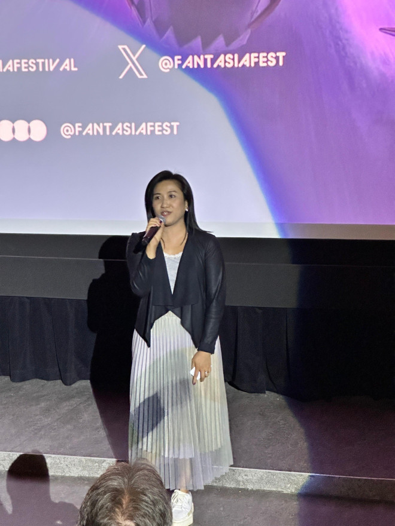
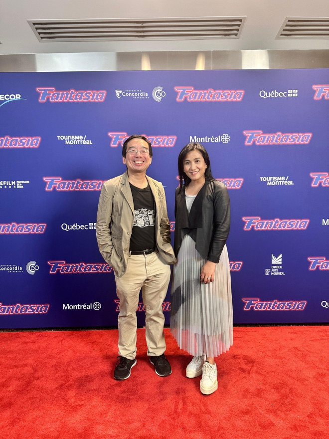

香港驻多伦多经济贸易办事处（香港经贸处）支持六部香港电影于七月十八日至八月四日在满地可举行的2024 Fantasia国际电影节放映，展示香港创意产业的活力。
《九龙城寨之围城》于八月一日在电影节上于加拿大首映。香港经贸处处长巫菀菁在电影放映前致辞，强调香港特别行政区政府（特区政府）致力支持香港的电影工业，及进一步加强香港作为东西方国际文化交流桥梁的角色。
她亦提到，香港特区政府透过资助电影制作、培训和参加国际电影节，与业界紧密合作创作出更多满足全球观众的精彩电影。当局亦推出新措施，推动香港与欧亚地区的电影合作。
其他在今届电影节放映的香港电影包括：《冷血十三鹰》、《倩女幽魂II人间道》、《万人斩》、《传说》及《卧底的退隐生活》。
香港驻多伦多经济贸易办事处（香港经贸处）支持六部香港电影于七月十八日至八月四日在满地可举行的2024 Fantasia国际电影节放映，展示香港创意产业的活力。
《九龙城寨之围城》于八月一日在电影节上于加拿大首映。香港经贸处处长巫菀菁在电影放映前致辞，强调香港特别行政区政府（特区政府）致力支持香港的电影工业，及进一步加强香港作为东西方国际文化交流桥梁的角色。
她亦提到，香港特区政府透过资助电影制作、培训和参加国际电影节，与业界紧密合作创作出更多满足全球观众的精彩电影。当局亦推出新措施，推动香港与欧亚地区的电影合作。
其他在今届电影节放映的香港电影包括：《冷血十三鹰》、《倩女幽魂II人间道》、《万人斩》、《传说》及《卧底的退隐生活》。

香港驻多伦多经济贸易办事处处长巫菀菁于八月一日在满地可Concordia Hall Theatre放映的香港电影《九龙城寨之围城》前致辞。

香港驻多伦多经济贸易办事处（香港经贸处）支持六部香港电影在满地可举行的2024 Fantasia国际电影节放映。图示香港经贸处处长巫菀菁（右）及Fantasia国际电影节亚洲节目共同总监King-wei Chu（左）于八月一日在满地可Concordia Hall Theatre合照。